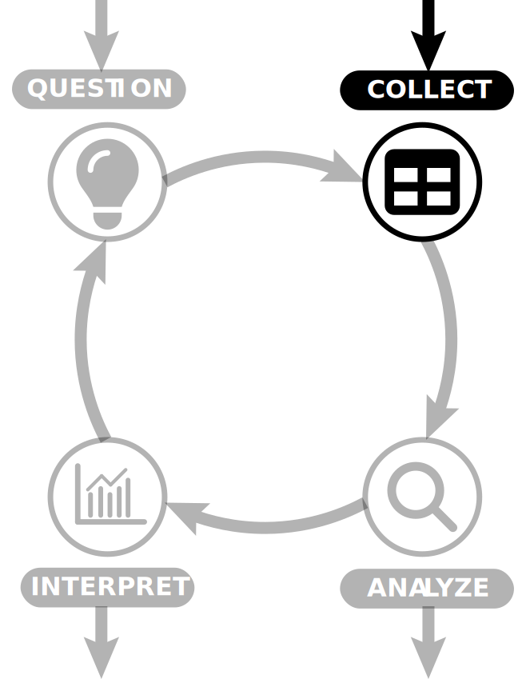
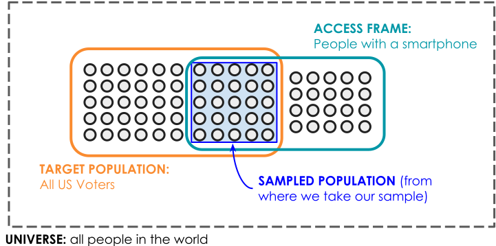
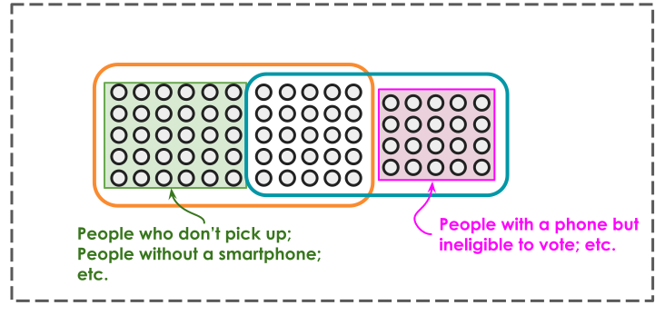
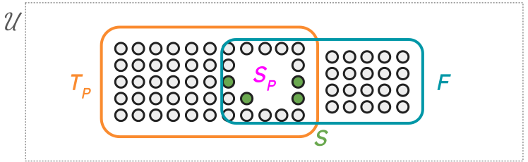
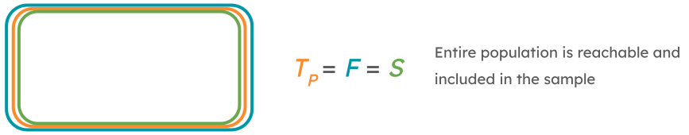
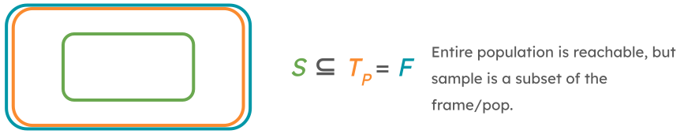
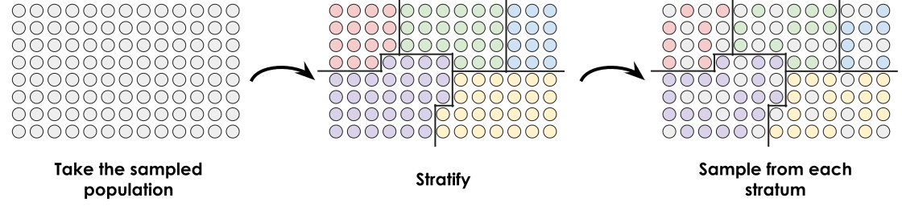
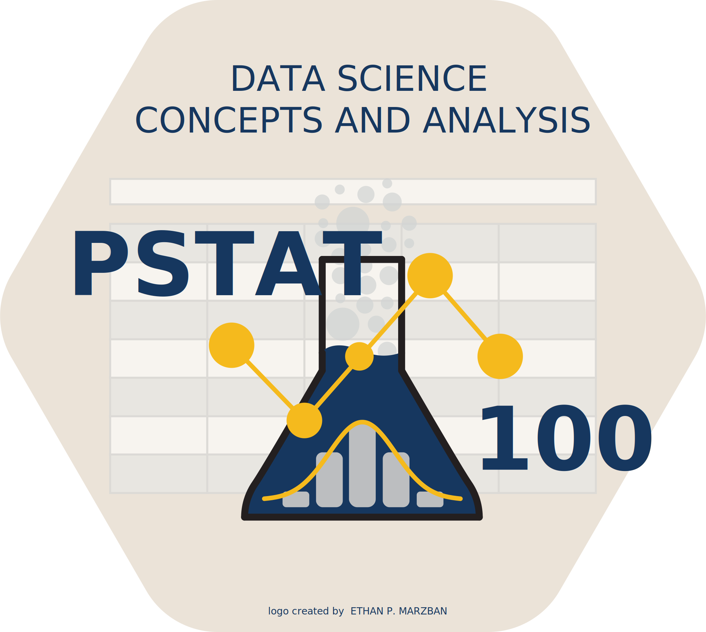

PSTAT 100: Lecture 08
Study Design and Sampling Techniques
Department of Statistics and Applied Probability; UCSB
Summer Session A, 2025
\[ \newcommand{\Prob}{\mathbb{P}} \newcommand\R{\mathbb{R}} \newcommand{\N}{\mathbb{N}} \newcommand{\E}{\mathbb{E}} \newcommand{\Prob}{\mathbb{P}} \newcommand{\F}{\mathcal{F}} \newcommand{\1}{1\!\!1} \newcommand{\comp}[1]{#1^{\complement}} \newcommand{\Var}{\mathrm{Var}} \newcommand{\SD}{\mathrm{SD}} \newcommand{\vect}[1]{\vec{\boldsymbol{#1}}} \newcommand{\Cov}{\mathrm{Cov}} \]
Congrats On Finishing ICA01!
Congratulations on finishing ICA01!
Grades have been released; allow me to say a few words about the ICA before we proceed with today’s lecture material.
First of all, I’ve posted both solutions to the ICA along with an additional document outlining some of the problems that seemed to trip people up the most.
- Please read through BOTH OF THESE before submitting a regrade request.
Regrade requests must be submitted before 11:59pm on Wednesday July 9, 2025 through Gradescope.
- Kindly note: we reserve the right to regrade your entire ICA, not just the question/s you request a regrade for.
Recap: The DSL

Recap: The DSL

- Today, we’ll explore the collecting step of the DSL.
- Specifically, we’ll consider questions like:
- How should we collect our data? (Study Design; Sampling Techniques)
- Given knowledge about how our data was collected, how far are we allowed to generalize our findings? (Scope of Inference)
Study Design
Diabetes
An Example
- Type II diabetes is a condition characterized by unusually high levels of sugar in the bloodstream, and is estimated to affect somewhere around 11% of all US citizens.
- Typically, diabetes is diagnosed by examining an individual’s A1C Hemoglobin levels, which is used as a measure of average blood sugar level over the past two-to-three months.
- Exactly what cutoff is used to officially diagnose diabetes varies somewhat from doctor to doctor; generally, A1C levels of 6.5% or higher are considered to be in the diabetic range.
Diabetes
An Example
Metformin is one of a few popular prescription drugs used to treat diabetes by lowering an individual’s A1C levels.
Suppose we are hired as statistical consultants to determine whether or not we believe Metformin is effective in combating type II diabetes.
How might we go about formulating our conclusions?
Specifically, how might we design some sort of experiment to answer this question?
Two Scenarios
Scenario 1:
We sample 100 people at random, 50 of whom currently on metformin and 50 of whom are not. We then collect the A1C levels of all 100 participants, to obtain 100 different data points.
Scenario 2:
We sample 100 people at random, none of whom are currently on metformin. We then assign 50 of them to take metformin, and assign the other 50 to take a placebo. Finally, after a few months, we collect the A1C levels of all 100 participants.
Two Scenarios
In both scenarios, the data we get out looks the same: 100 observations of A1C levels, 50 of which are from patients on metformin and 50 of which are from patients are not on metformin.
The two scenarios, however, do differ in one crucial aspect: whether we (as the experimenters) administer/withhold treatment or not.
This is the key distinction between an observational study and an experiment.
- In an observational study, treatment is neither administered nor withheld. In an experiment, treatment is either explicitly administered or withheld.
Check Your Understanding
Which Scenario (1 or 2), corresponds to an observational study, and which corresponds to an experiment?
Observational Studies
The distinction between an observational study and an experiment is important not just for general purposes, but also for the purposes of causal inference.
Broadly speaking, causal inference is the branch of statistics dedicated to trying to take associations between variables a step further, and determine whether or not one variable is causing a change in the other. Such relationships (in which one variable is causing or inducing a change in another) is called a causal relationship (or a causal effect).
We’ll talk about causal inference more later in this course.
Observational Studies vs. Experiments
The reason I bring up causal inference is that we cannot (or, at least, it is highly cautioned against) make causal claims in an observational study.
- Essentially, the argument goes: in an observational study, we are not allowed to control variables. As such, we cannot effectively control against confounding variables (variables that affect our data, but that are uncontrolled).
Now, that is not to say that associations in an experiment automatically imply causation. The only way to determine causality is to utilize tools from causal inference.
In an experiment, the group/s that are assigned treatment are called treatment group(s), and the group/s that have treatment withheld (or are administered a placebo) are called control group(s)
Another Distinction
Scenario 1:
We sample 50 people at random, none of whom are currently on metformin. We take their A1C levels at the start of the study, prescribe then metformin (which they take regularly), and then measure their A1C levels a few months later.
Scenario 2:
We sample 100 people at random, none of whom are currently on metformin. We then assign 50 of them to take metformin, and assign the other 50 to take a placebo. Finally, after a few months, we collect the A1C levels of all 100 participants.
- Again, the end-product data are the same between the scenarios. Now, the key distinction is whether or not subjects were tracked over time.
Longitudinal vs. Cross-Sectional Studies
This is the difference between longitudinal studies (in which subjects are tracked over time) and cross-sectional studies (in which there is no tracking over time).
Longitudinal studies lead to paired or grouped, in which there is serial correlation among observations.
- For instance, a pre-metformin A1C measurement from Bob will most certainly be correlated with a post-metformin A1C measurement from Bob
By the way, both observational studies and experiments could be longitudinal or cross-sectional.
- As an example, classify the two scenarios on the previous page as either longitudinal or cross-sectional, and whether they come from an observational study or an experiment.
Your Turn!
Your Turn!
Setup: A new pilot program is purported to help high school students perform better on the AP (Advanced Placement) AB Calculus exam. To test this claim, an experimenter selects 40 high school students at random, and assigns 20 of them to a class testing out the new program and 20 of them to a “standard” calculus class (that does not offer the new program). Before beginning the study, all 40 students are given an entrance exam (to use as a baseline score), and all 40 students take an exit survey at the end of the study.
Is this an observational study or an experiment?
Is this a longitudinal study or a cross-sectional study?
Suppose it is found that students who underwent the new program performed significantly better on the AP Calculus AB exam than students in the “traditional” classroom. Can we claim that the new program caused the increase in performance? If not, what are some potential confounding variables?
05:00
Sampling Techniques
Sampling Terminology
There are three main terms we’ll start with: target population, access frame, and sample.
- Please note that these terms go by many names: sometimes the access frame is called the sampling frame; sometimes the target population is just called the “population”.
- We also assume that everything exists within a so-called universe, which we don’t always make explicit reference to.
Target Population: the set of observational units that we would like to investigate/make claims about.
Access Frame: set of elements that we can actually reach/observe.
Sample: the subset of elements taken from the access frame that we actually end up observing.
Example: Voter Turnout
Suppose we would like to determine which US voters are most likely to vote for a particular candidate in a local election, and suppose we do so by way of a text survey (i.e. a survey sent to people’s smartphones).
Some people don’t have a smartphone; these people will be a part of the target population (since they are a part of the set of people we’re interested in), but not part of the access frame (because they’re not accessible via our survey method).
Some people are ineligible to vote, but still have a smartphone; these people will be a part of the access frame (since they are accessible via our survey method), but not a part of the target population (since we’re only interested in voter turnout among those eligible to vote).
Example: Voter Turnout
Example: Voter Turnout
More Formally
Let \(U_i\) denote the ith observational unit, and let \(I\) denote the set of allowable indices for i.
Universe: \(\mathcal{U} := \{U_i\}_{i \in I}\)
Target Population: \(T_P := \{U_1, \cdots, U_n\} \subseteq \mathcal{U}\)
- A subset (potentially an improper subset) of the universe containing the units of interest to the study
Access Frame: \(F = \{U_j \mid j \in J \subset I \}\)
- A subset (potentially an improper subset) of the universe containing the units of accessible to the study
Sampled Population: \(S_P := T_P \cap F\)
Sample: \(S \subseteq S_P\)
More Formally
- There is still the question of which units from the sampled population actually get included in our sample.
Census
In some ways, a census may seem “ideal”. So why don’t we hear more about censuses?
Firstly, censuses are often prohibitively expensive (both in terms of money and in terms of personpower required).
Censuses can also produce imbalanced samples, something we’ll talk more about later today.
Other Sampling Structures
This is perhaps a slightly more common situation.
The natural follow-up question is: what mechanism should we implement to select units from the sampled population?
- This mechanism is often random, leading to probabilistic samples (sometimes called random samples).
Over the next few slides, we’ll discuss some of these probabilistic sampling techniques.
Simple Random Sampling
Suppose every unit in the sampled population has an equal chance of being included in our sample.
- That is, let πi denote the probability that unit i is included in the sample (we call this the inclusion probability); then suppose πi = πj for every i ≠ j
Such a sample is called a simple random sample (SRS).
- Again, the hallmark of an SRS is that each unit in the frame has an equal chance of being included in our sample.
Question for you: in a census, what is the inclusion probability πi?
By the way: it is possible to take SRSes with or without replacement. In real-world settings, sampling without replacement is far more common however sampling with replacement tends to make inference (the topic of tomorrow’s lecture) a bit easier.
Moving Beyond Simple Random Sampling
- Simple random sampling is sometimes touted as a “gold standard” for sampling.
- Admittedly, it is true that inference for SRSes is a lot simpler than inference for samples taken according to other schemes (some of which we’ll discuss in a bit).
- Basically, samples that are taken as an SRS (with replacement) can be treated as i.i.d. (independently and identically distributed) random variables, meaning we can use our PSTAT 120A and 120B knowledge to easily model, perform inference, predict, etc.
- Admittedly, it is true that inference for SRSes is a lot simpler than inference for samples taken according to other schemes (some of which we’ll discuss in a bit).
- However, simple random samples are not immune to the effects of bias.
Moving Beyond Simple Random Sampling
Let’s say we have been hired as an external consultant for some company, which wants to conduct a climate survey on its employees.
- If we take an SRS of employees, it seems like we should get a pretty unbiased sample.
- Well, what if I told you 80% of employees at this company identified as white. Still think our sample will be free of bias?
Indeed, an SRS will very nicely preserve (or, at the very least, imitate) the structure of the sampled population.
So, if the sampled population has sources of systematic bias, so too may our SRS.
- Emphasis on may - it is certainly possible that we just so happen to obtain a sample that is balanced in terms of race. But, is it probable?
Stratified Random Sampling
To obtain a more balanced sample, consider the following scheme: divide the employees by the race they most identify with, and then take an SRS of employees from each race.
This is an example of a stratified random sample.
In a stratified random sample, the sampled population is divided into a series of groups, called strata (singular, stratum), and an SRS is taken from each stratum.

Leadup
Let’s say we’re working with the superintendent for a certain school district, and we want to assess the education level of students across schools in this district.
Let’s also suppose the schools themselves are relatively similar to one another.
We might be tempted to take a stratified sample, using each school as a stratum.
- This would work! But, it’s a bit overkill, mainly because the schools are all relatively similar to each other.
As such, a more efficient scheme might be to randomly select some schools, and then take an SRS from each of the sampled schools.
Cluster Sampling
As such, a more efficient scheme might be to randomly select some schools, and then take an SRS from each of the sampled schools.
This is an example of a cluster sampling scheme: the sampled population is (again) divided into a series of groups (now called clusters); an SRS of clusters is taken, and then an SRS from the sampled clusters is taken.
- CAUTION: IMS calls this “multistage sampling” (and calls something else cluster sampling). This is a bit nonstandard - the definitions above are more standard, which is why we’re adopting them for this course.
Cluster Sampling
Comparisons
As a concrete example, consider drawing a sample of size 20 from the set of integers {1, 2, …, 100}.
On the next slide are three such samples, each sampled according to a different strategy.
- To generate the SRS, I simply used the
sample()function fromR.- As an aside, if you want to sample rows from a dataframe, consider using the
dplyr::slice_sample()function
- As an aside, if you want to sample rows from a dataframe, consider using the
- To generate the stratified random sample, I divided the population into 10 strata: {1, …, 10}, {11, …., 20}, …., {91, …, 100}, and took an SRS of size 2 from each stratum.
- To generate the cluster random sample, I divided the population into 20 clusters: {1, …, 5}, {6, …, 10}, …., {96, …, 100}. I then took an SRS of 10 of these clusters, and took an SRS of size 2 from each cluster.
- To generate the SRS, I simply used the
Comparisons

Your Turn!
Your Turn!
DacMonalds wants to compare sales across its different regional locations. With over 40,000 locations, company executives cannot examine sales reports from each and every location. Propose a sampling scheme that we could use to collect data; be as specific as possible.
03:00
Scope of Inference
So, why should we care how our sample was taken?
For one thing, knowledge about this is crucial in handling missing values (which we will talk about in a few minutes).
But, our goal with data is (often) to use it to make broader claims about the world.
- More specifically, we often wish to use our data to make claims about the population.
The scope of inference, loosely speaking, refers to extent to which conclusions based on the sample are generalizable to the population and/or universe.
- Indeed, identifying the scope of inference for a particular dataset requires knowledge about how the data was collected!
Scope of Inference
As a simple (but somewhat extreme) example, opinions on gun control collected from US citizens cannot be used to make conclusions or claims about the views on gun control held by citizens of, say, Canada.
Even data based on an SRS of individuals taken from the pool of US citizens may have limited scope of inference; for instance, if our sample ends up including a disproportionate amount of male-identifying respondants then our conclusions may not generalize to female-identifying respondants.
More or less, whether or not we can generalize the results of a sample to the population boils down to whether or not the sample is representative of the population.
Naturally, this question of representativeness is tied with the relationship between the population, frame, and sample, which is why we started off by talking about these notions.
Your Turn!
Your Turn!
SETUP: A new pilot program is purported to help high school students perform better on the AP (Advanced Placement) AB Calculus exam. To test this claim, an experimenter takes a simple random sample of 40 high school students from Santa Barbara, and assigns 20 of them to a class testing out the new program and 20 of them to a “standard” calculus class (that does not offer the new program). Before beginning the study, all 40 students are given an entrance exam (to use as a baseline score), and all 40 students take an exit survey at the end of the study. It is found that students in the pilot program performed significantly better on the AP Calculus AB exam than students in the “traditional” classroom.
Are we justified in concluding that the pilot program will work, on average, for residents of Santa Barbara?
Are we justified in concluding that the pilot program will work, on average, for residents of California?
Are we justified in concluding that the pilot program will work, on average, for US residents?
03:00
Bias
Let’s talk a bit about bias.
There’s a formal statistical definition of bias, which we’ll discuss in a few lectures. Today, let’s discuss bias at a high level: broadly speaking, we can think of bias as discrepancies between some aspect of the sample and the corresponding aspect of the population.
Selection bias occurs when some part of the population is not in the sampled population
- For example, an experimenter interested in collecting household income data who neglects to survey transient (aka unhoused) persons will most definitely obtain a biased sample.
Non-response bias occurs when a subset of the sampled population is included in the sample, but choose not to contribute data (e.g. didn’t fill out a survey, didn’t pick up the phone, dropped out of a study for personal reasons, etc.)
Bias
- Note the distinction between selection and non-response bias. In both cases, we may end up with a group of missing values from our dataset.
- The mechanisms behind why they are missing, however, are very different across the two types of bias.
- In selection bias, values are missing because we, as experimenters, chose to exclude them (for whatever reason).
- In non-response bias, values are missing for reasons outside our control.
- This distinction will become important later in the course, when we talk about how to handle missing data.
Convenience Sampling
Suppose we’re interested in conducting a survey on UCSB students’ attitudes toward police on campus.
One way we might administer this survey is to stand outside the PSTAT main office and pick the first 100 students we see to participate in a survey.
Indeed, assuming we don’t have any non-response bias, we’ll get 100 people in our “sample!”
- But, is this really a quality sample?
- In fact, is this even really a random sample?
- I think most of us would say, “no.”
More generally, as the name suggests, a convenience sample is obtained by drawing whichever units from the population are most convenient.
Convenience Sampling
Convenience samples often have zero scope of inference.
Unfortunately, there are still some published studies that are based on convenience samples.
- Often, these are motivated by the idea that some data is better than no data.
However, we also have to contend with what is often called the garbage-in garbage-out philosophy.
- Loosely speaking, even the most sophisticated data science techniques will produce meaningless (and sometimes dangerous) results if they are applied to poorly-sampled data.
Next Time
Tomorrow, we’ll begin our transition into inferential statistics.
- Please brush up on your PSTAT 120A material!
In lab tomorrow, you’ll get some practice with sampling, along with some topics from tomorrow’s lecture.
REMINDER: Keep working on the Mid-Quarter Project!
- Your reports are due this Sunday (July 13) by 11:59pm.
- Kindly recall that no late submissions will be accepted for any reason.
- Only one member needs to submit to Gradescope; they will be prompted to match all group member names.

PSTAT 100 - Data Science: Concepts and Analysis, Summer 2025 with Ethan P. Marzban